Coloriage n° 1 · page 5
Choukouya
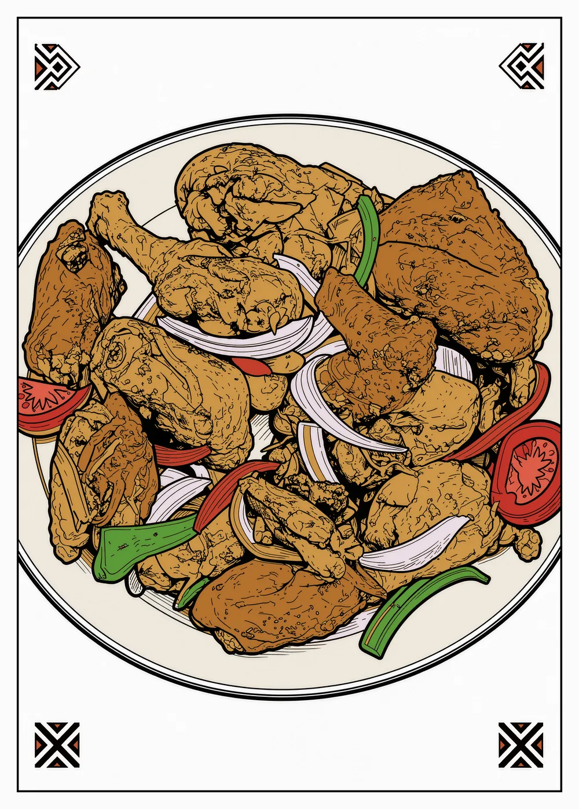
↑ Tous les dessinsLes 14 dessins du livret, mis en couleurs. Compare avec ta page, pioche des idées… et garde les tiennes : il n'y a pas de mauvaise couleur.
Coloriage n° 1 · page 5

↑ Tous les dessinsColoriage n° 2 · page 7
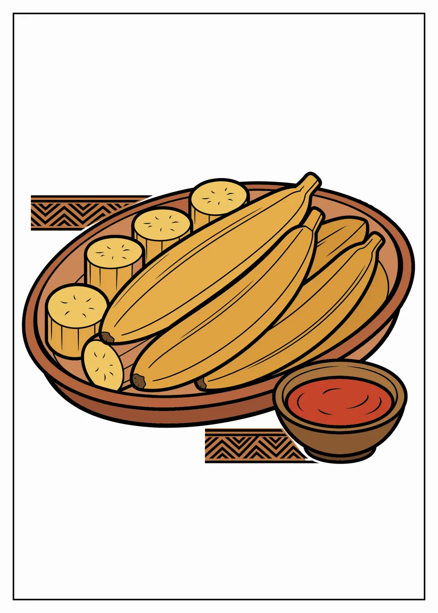
↑ Tous les dessinsColoriage n° 3 · page 9
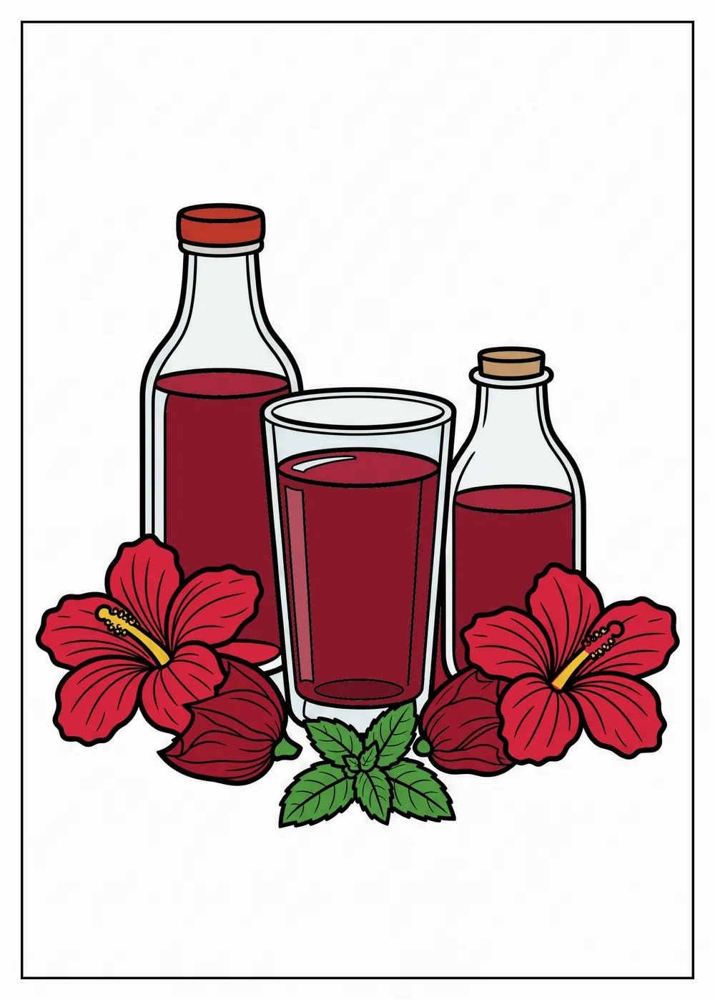
↑ Tous les dessinsColoriage n° 4 · page 11
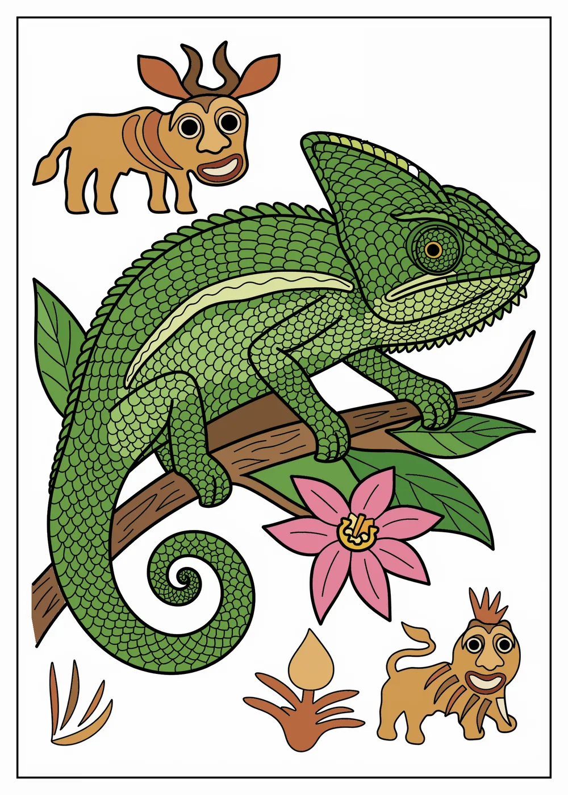
↑ Tous les dessinsColoriage n° 5 · page 13
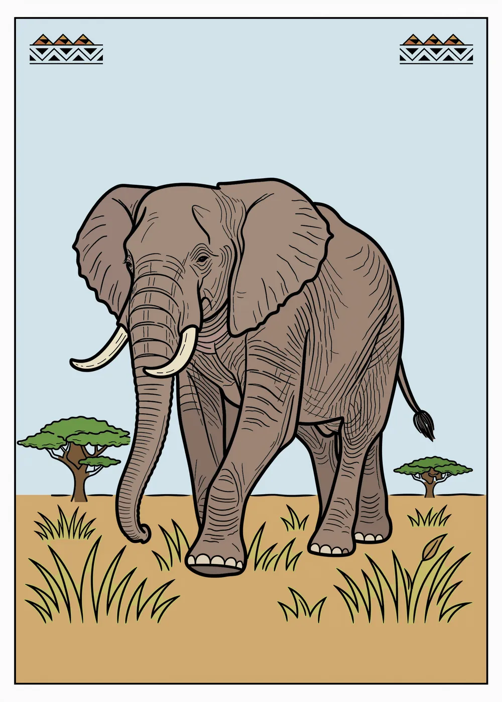
↑ Tous les dessinsColoriage n° 6 · page 15
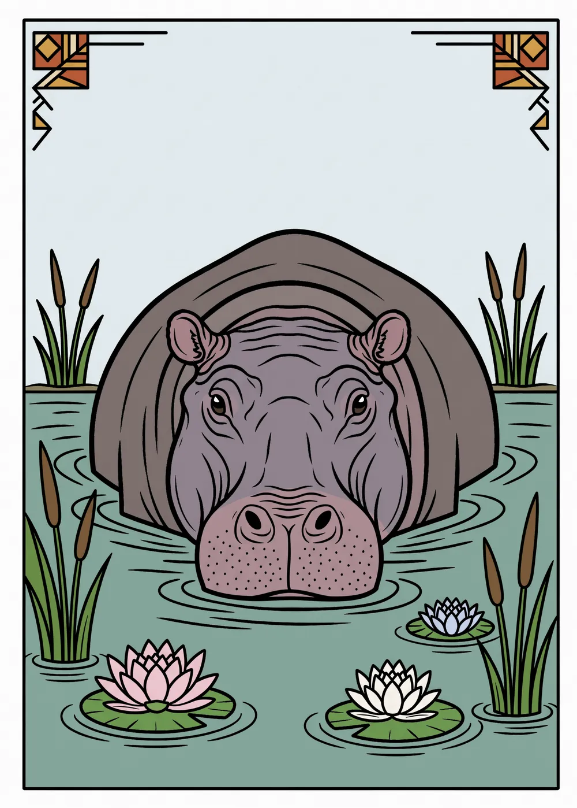
↑ Tous les dessinsColoriage n° 7 · page 17
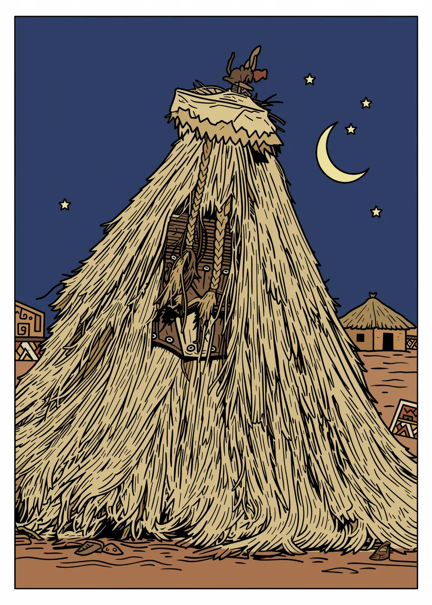
↑ Tous les dessinsColoriage n° 8 · page 19
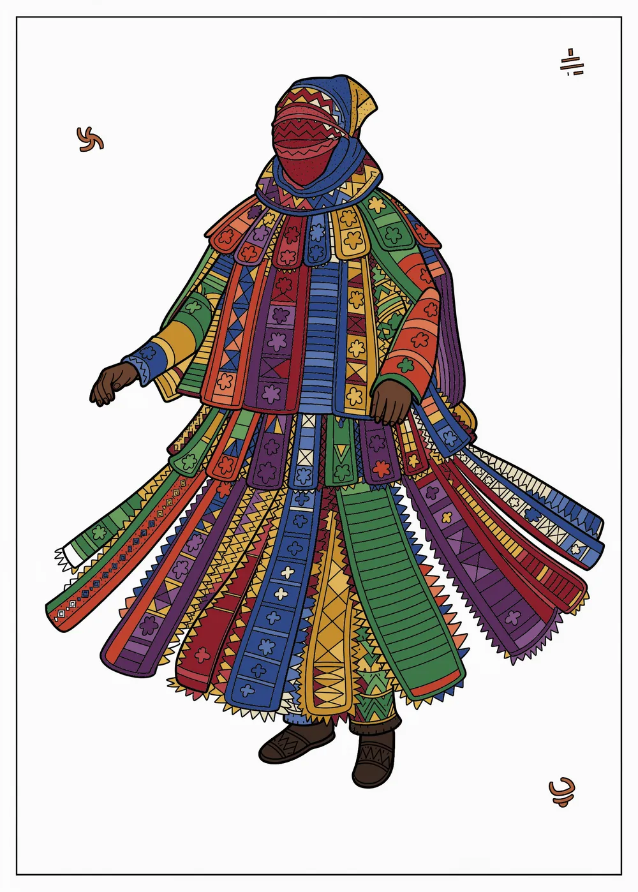
↑ Tous les dessinsColoriage n° 9 · page 21
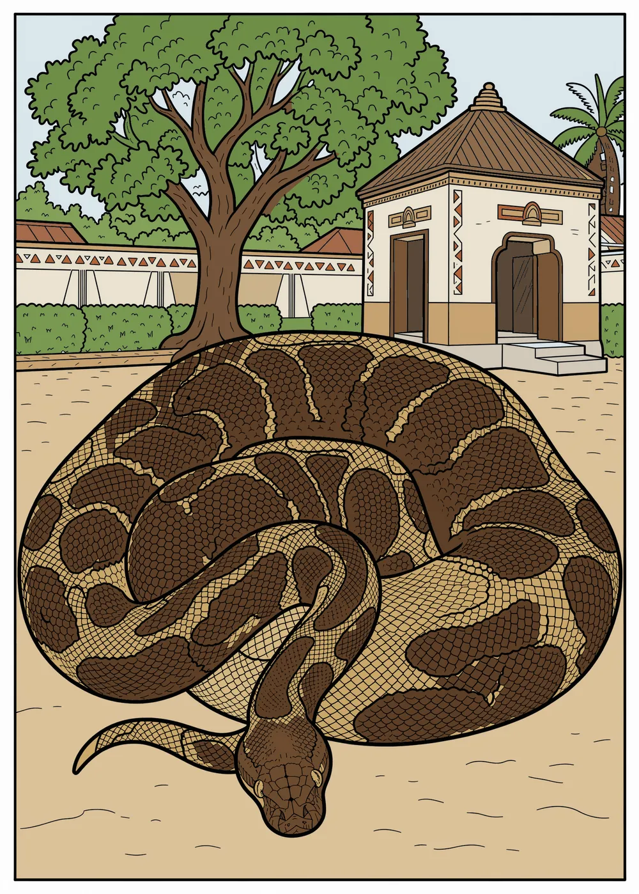
↑ Tous les dessinsColoriage n° 10 · page 23
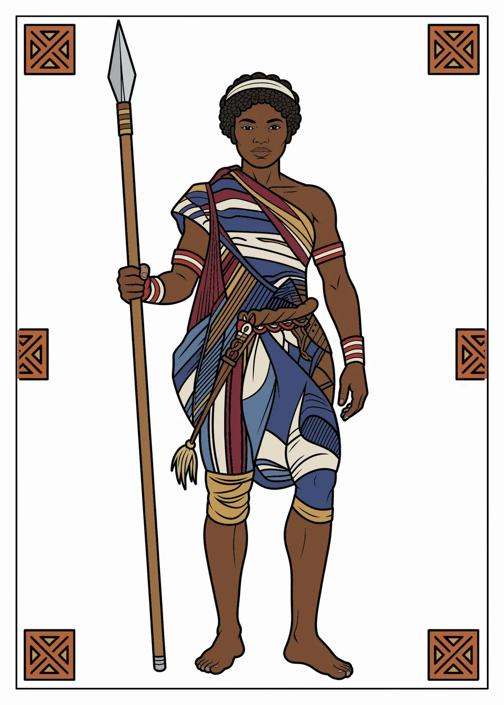
↑ Tous les dessinsColoriage n° 11 · page 25
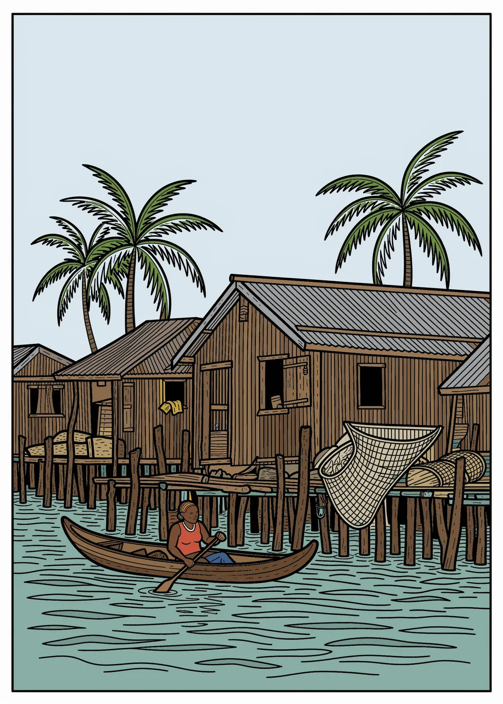
↑ Tous les dessinsColoriage n° 12 · page 27
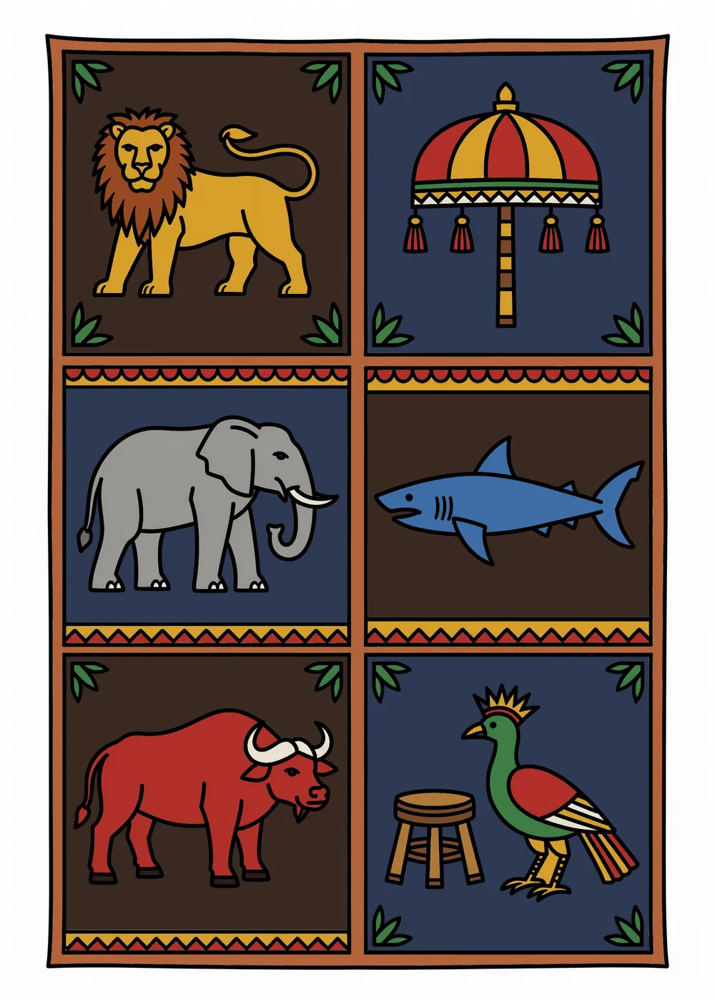
↑ Tous les dessinsColoriage n° 13 · page 29
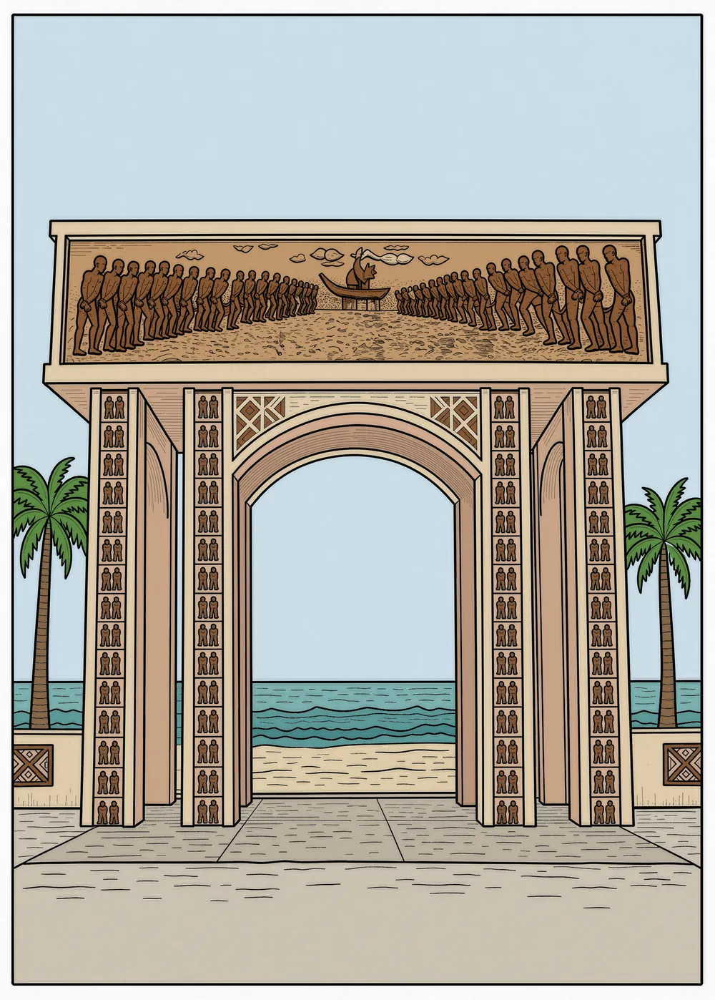
↑ Tous les dessinsColoriage n° 14 · page 31
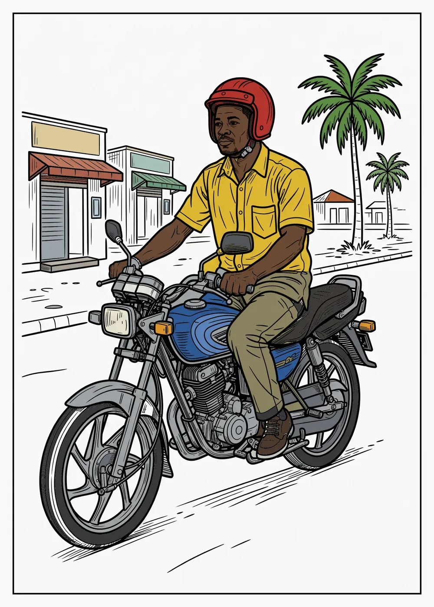
↑ Tous les dessins